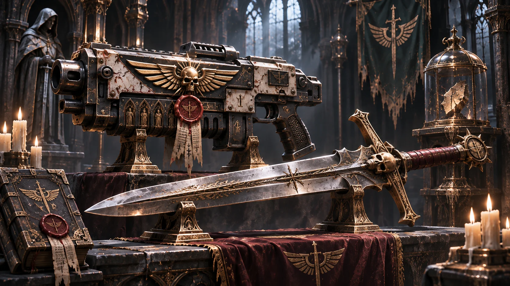

V3.7 原文档案 · 按原稿顺序完整收录 · 未删节
V3.7 原文档案 · 按原稿顺序完整收录 · 未删节四、特殊武装（精选）
第一军团原初造物

暗鸦凝视者。 精工动力剑。柄中封着一片透明的古卡利班叶片。
余烬之火。 精工爆弹枪，枪膛从不接纳普通弹药。枪匣刻着六道短线。
最后的悔罪。 鸦翼战锤。锤头来自卡利班轨道精炼站残片，表面嵌着一圈暗红封蜡。
余烬之髓。 精工动力拳套，指节嵌着七片从希芙拉穹顶坠落的碎晶。
不言之判。 赦免权杖，敲击面雕有闭合的嘴。
通用远征遗物
相位审判律法之剑。 以卡利班残骸重铸，刃形各异，刃口在暗处轻微错位。
希芙拉之戟。 长柄为高重力合金，枪尖在静止时仍使周围灰尘缓慢沉降。
希芙拉之盾。 盾面嵌有灵能抑制器。数面并列时，盾沿浮出不规则的黑色细线。
希芙拉型等离子武器。 开火时呈余烬蓝冷光，枪口凝霜。
死亡守望的沉默礼物
沉默的守望者。 死亡守望遗物，一柄改造过的异形相位剑。
无主之地的沉默赠礼。 一柄精工相位剑，一面暴风盾。盾背刻有被磨去的死亡守望编号。
灰骑士的遗物
阿格里斯裂谷战后，一柄复仇女神戟随密封伤员舱撤回。装具箱的灰骑士编号未能与撤离名单核对；隐修会也没有收到移交令。
沉默之刃。 军械库的内部登记名。长戟仍在封蜡和锁链内，灵能回路未改装；只有保管人见过它的完整刻印。伊瑟林数次拟写归还函，均因收件舰队无法确认而未发出。
无畏机甲
隐修会没有现役无畏机甲。静滞地库里，仍有老兵在等待一个无人敢许诺的清晨。